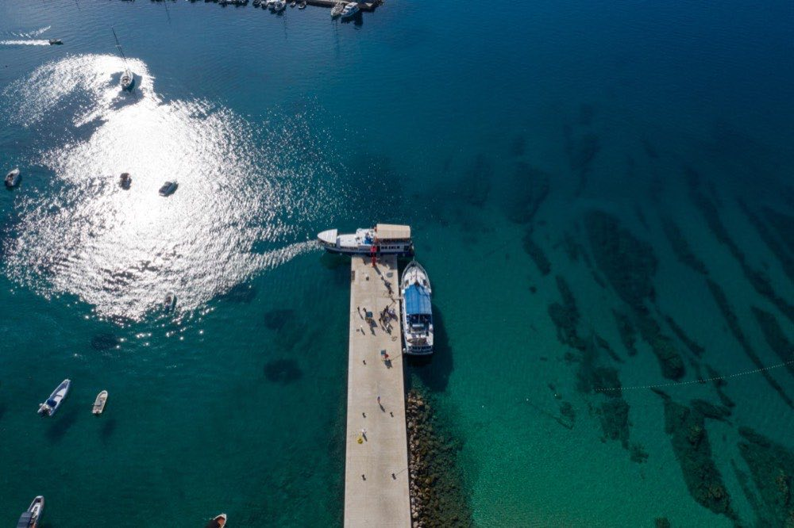
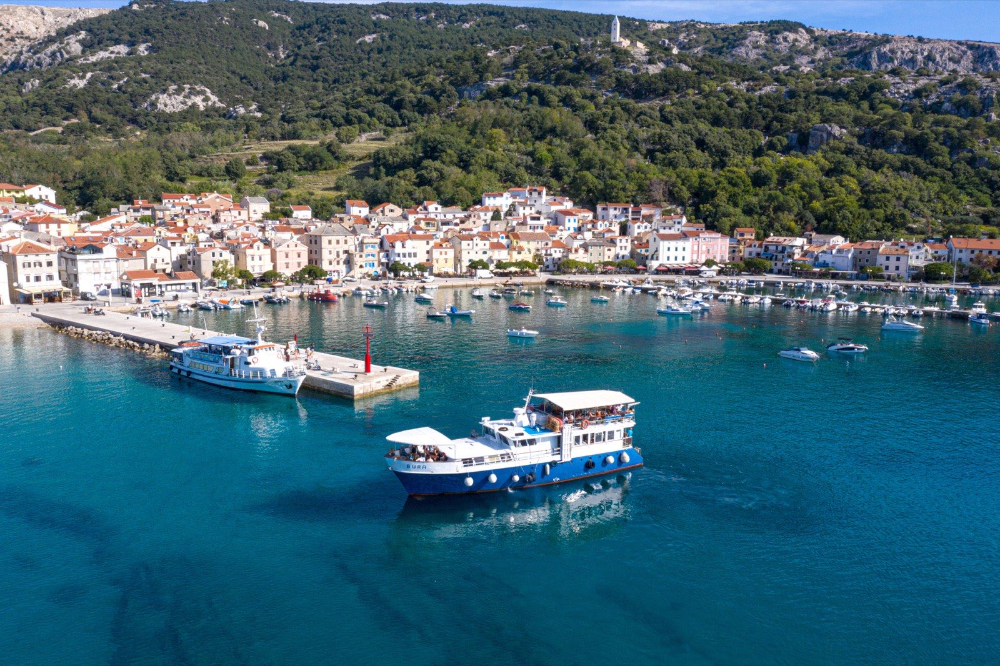
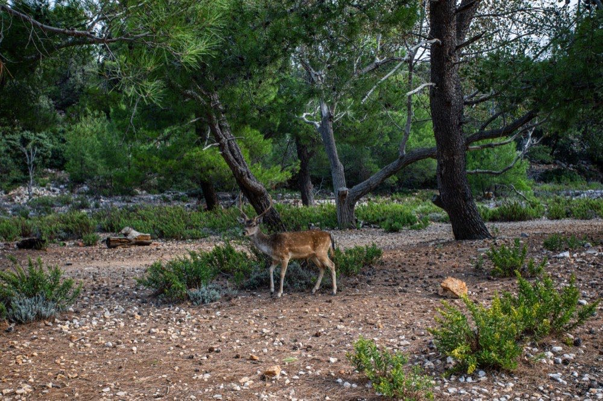
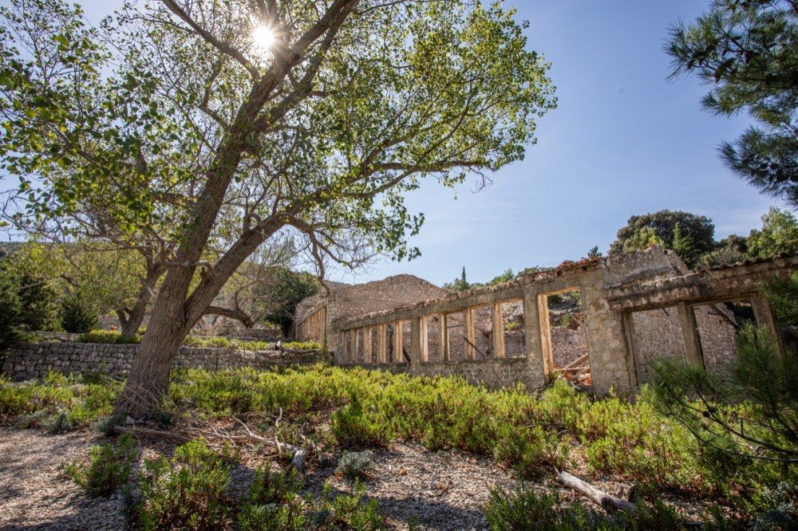
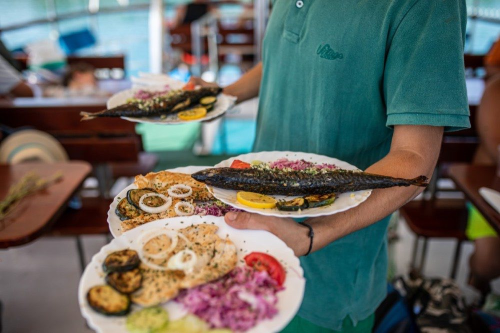
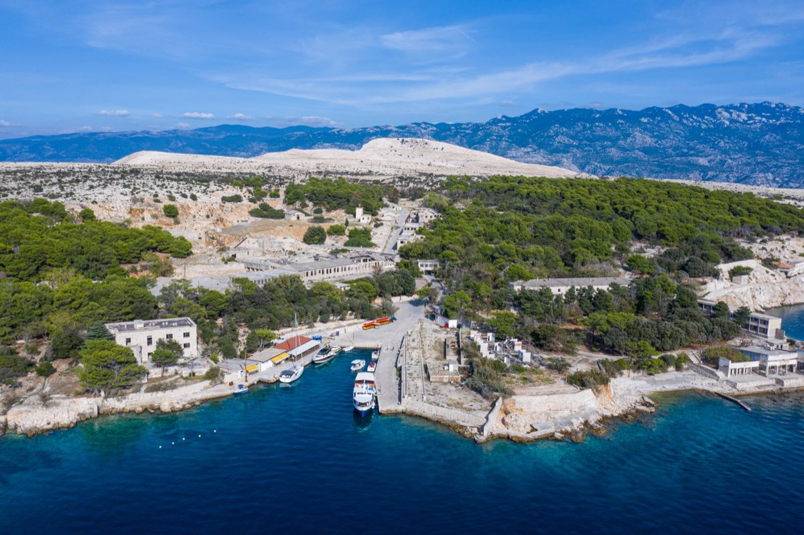
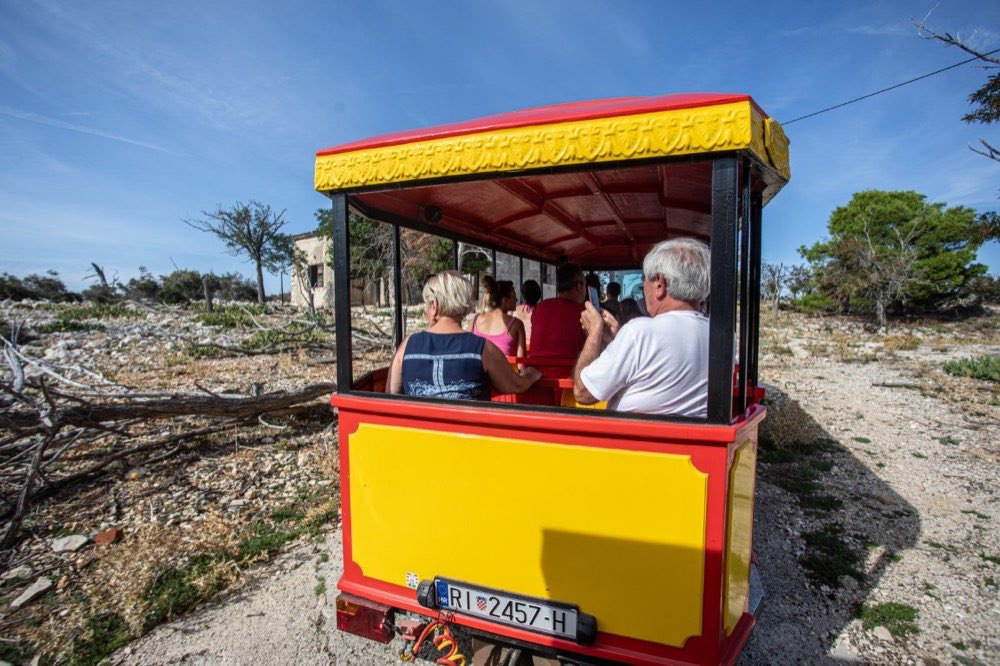
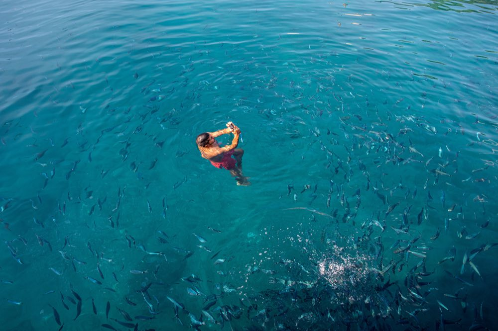

Grgur, Rab, Goli i Prvić.
Uživajte u brodskom izletu iz Baške: četiri otoka u jednom danu, ručak na brodu i tri prilike za kupanje.
Shematski prikaz rute, nije u mjerilu.
- B
Polazak s rive u Baški
Vaš izlet počinje u 10 sati s rive u Baški. Prvo slijedi panoramska vožnja uz otok Prvić, najveći nenaseljeni otok na Jadranu.

- 1Zaustavljanje: 1 sat
Otok Grgur
Na Grguru možete razgledati ostatke ženskog zatvora iz vremena Jugoslavije, hraniti pitome jelene, okupati se na šljunčanoj plaži ili se osvježiti u obližnjem restoranu.


- 2Zaustavljanje: 2 sata
Rab – Lopar
Nastavljamo prema Rabu, u mjesto Lopar, gdje je jedna od najljepših pješčanih plaža na Jadranu – plaža San Marino. More je plitko i toplo, vaši klinci bit će oduševljeni. Nakon polaska slijedi ručak na brodu koji priprema posada (riblji ili mesni meni).


- 3Zaustavljanje: 1 sat
Goli otok
Ostatke „hrvatskog Alcatraza” iz vremena Jugoslavije, u kojem su bili zatvoreni muški zatvorenici, razgledate pješice ili vlakićem (dodatno se plaća). U blizini je mala šljunčana plaža i restoran za osvježenje.


- 4Zaustavljanje: 45 minuta
Prvić – plaža Njivice
Zadnja destinacija je otok Prvić i plaža Njivice ispred koje sidrimo. Ovdje je vrhunac dana: skakanje s broda, ronjenje na dah i plivanje u bistrom moru.

- B
Povratak u Bašku
Nakon kupanja slijedi kratka vožnja do Baške i iskrcavanje na rivi s koje smo krenuli.

Za stolom na brodu, između dva kupanja.
Nije uključeno: vlakić na Golom otoku (dodatno se plaća).
Rezervirajte svoj izlet odmah.
Rezervirajte izlet za sebe i svoju obitelj: nazovite, pišite nam ili ispunite obrazac.